UNIDAD 1. ESTUDIO ORGANIZACIONAL
UNIDAD 1. ESTUDIO ORGANIZACIONAL
Introducción
Toda organización enfrenta situaciones que pueden afectar su funcionamiento: retrasos en los procesos, duplicidad de funciones, problemas de comunicación, actividades innecesarias, responsabilidades poco claras, exceso de trámites o dificultades para alcanzar los resultados esperados.
Sin embargo, antes de realizar cambios es necesario conocer qué está ocurriendo y por qué está ocurriendo. Para ello se utiliza el estudio organizacional, un proceso sistemático que permite analizar el funcionamiento de una organización, identificar problemas y áreas de oportunidad, determinar sus posibles causas y establecer alternativas de solución.
Un estudio organizacional no se limita a detectar errores. También permite reconocer procesos que pueden simplificarse, recursos que pueden aprovecharse mejor y formas de trabajo que necesitan actualizarse.
Durante esta unidad conoceremos las diferentes etapas que integran un estudio organizacional, comenzando con la definición de la problemática y continuando con la planeación, recopilación y análisis de información, diagnóstico, diseño de propuestas, implantación y mantenimiento de las mejoras realizadas.
Objetivo de la unidad
Al finalizar la unidad, el estudiante será capaz de comprender y aplicar las etapas básicas de un estudio organizacional, identificando problemáticas administrativas, recopilando y analizando información y formulando propuestas de mejora que contribuyan al funcionamiento eficiente de una organización.
¿Por qué es importante esta unidad?
Antes de modificar una estructura, cambiar un procedimiento o implementar una nueva forma de trabajo, es necesario realizar un diagnóstico adecuado.
Una solución aplicada sin conocer las causas del problema puede generar nuevos errores, mayores costos o simplemente trasladar el problema hacia otra área.
Por ello, el estudio organizacional parte de una idea fundamental:
Para mejorar una organización, primero debemos comprender cómo funciona.
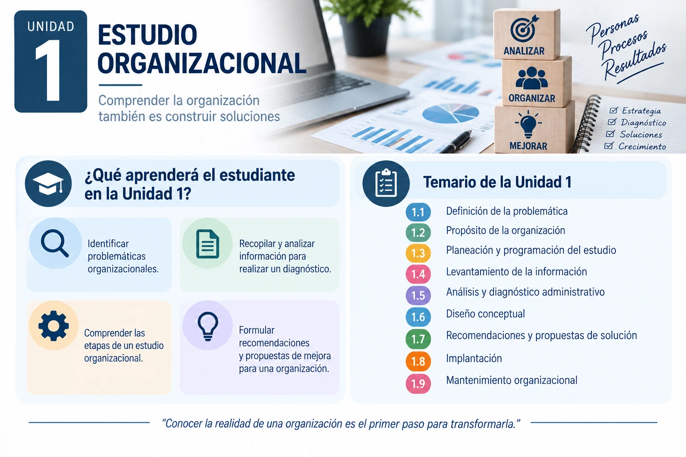
UNIDAD 1
UNIDAD 1. ESTUDIO ORGANIZACIONAL
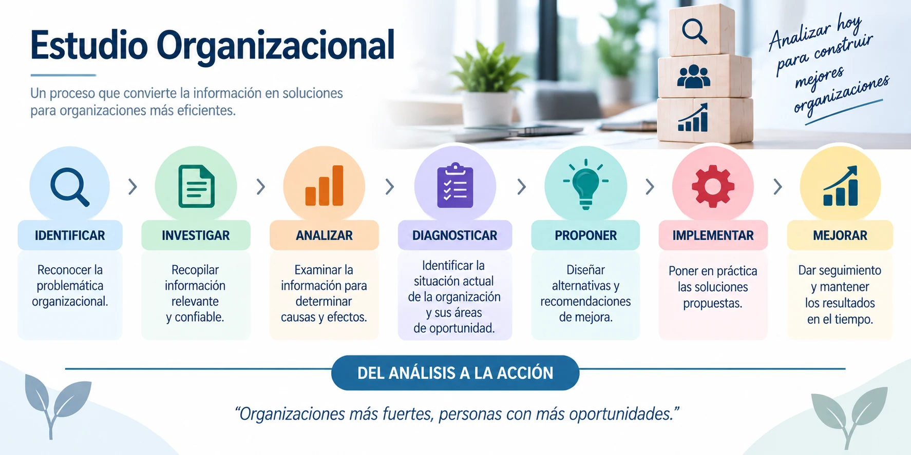
1.1 Definición de la problemática
Toda mejora organizacional comienza con una pregunta:
¿Qué está ocurriendo y por qué representa un problema para la organización?
Definir correctamente la problemática es el primer paso de un estudio organizacional, ya que permite determinar qué situación necesita ser analizada, dónde se presenta, a quién afecta y cuáles pueden ser sus consecuencias.
¿Qué es una problemática organizacional?
Una problemática organizacional es una situación que afecta el funcionamiento adecuado de una organización y que puede impedir o dificultar el cumplimiento de sus objetivos.
Puede presentarse en diferentes áreas y manifestarse de distintas formas, por ejemplo:
- Retrasos en los procesos.
- Duplicidad de funciones.
- Errores frecuentes.
- Problemas de comunicación.
- Conflictos entre departamentos.
- Exceso de trámites.
- Desperdicio de recursos.
- Baja productividad.
- Quejas de clientes.
- Incumplimiento de objetivos.
Identificar una problemática no significa buscar culpables, sino comprender qué está sucediendo para posteriormente determinar sus causas y encontrar alternativas de solución.

Una idea importante
Lo que observamos inicialmente puede ser solamente un síntoma y no la verdadera causa del problema.
Por ejemplo:
“Tenemos muchas quejas de clientes.”
Las quejas son una señal de que algo está ocurriendo, pero todavía necesitamos investigar:
¿Por qué se están quejando los clientes?
La causa podría encontrarse en la atención, los tiempos de entrega, la calidad del producto, errores administrativos o incluso en la información proporcionada al cliente.
¿Cómo definir correctamente una problemática?
Antes de iniciar un estudio organizacional conviene responder:
¿Qué sucede?
Describir la situación de manera concreta.
¿Dónde sucede?
Identificar el área, proceso o departamento involucrado.
¿A quién afecta?
Determinar las personas, departamentos, clientes o proveedores afectados.
¿Desde cuándo ocurre?
Identificar cuándo comenzó la situación.
¿Con qué frecuencia ocurre?
Determinar si sucede ocasionalmente o de manera recurrente.
¿Qué consecuencias genera?
Analizar su impacto en tiempo, costos, productividad, calidad, personal o clientes.
¿Cómo debe redactarse un problema?
Una buena definición debe ser clara, específica y basada en hechos.
❌ Definición poco adecuada:
“Los empleados trabajan mal.”
Esta afirmación es general y no permite saber exactamente qué está ocurriendo.
✅ Definición más adecuada:
“Durante los últimos tres meses se han presentado retrasos frecuentes en la elaboración de los reportes del área administrativa, lo que ha ocasionado demoras en la entrega de información a la gerencia.”
La segunda formulación permite identificar qué sucede, dónde ocurre y qué consecuencia está generando.
Idea clave
Definir correctamente el problema evita buscar soluciones para una situación que todavía no comprendemos.
Analiza la situación:
Una empresa ha registrado un aumento considerable en la rotación de personal. La gerencia afirma: “El problema es que los empleados ya no quieren trabajar”.
¿Consideras que esta afirmación define correctamente el problema? ¿Qué información investigarías antes de llegar a una conclusión?
1.2 Propósito de la organización
1.2 Propósito de la organización
Toda organización existe por una razón. Antes de analizar sus problemas, procesos o estructura, es necesario comprender qué busca lograr, a quién sirve y qué valor pretende generar.
A esto se le conoce como propósito organizacional.
¿Qué es el propósito de una organización?
El propósito organizacional es la razón fundamental que explica por qué existe una organización y qué busca aportar a sus clientes, usuarios, trabajadores o sociedad.
El propósito proporciona dirección y sirve como referencia para establecer objetivos, diseñar procesos, distribuir responsabilidades y tomar decisiones.
Por ejemplo, una universidad no existe únicamente para impartir clases. Su propósito se relaciona con la formación de personas y profesionales capaces de contribuir a la sociedad.
De la misma manera, un hospital no existe solamente para realizar consultas médicas; su propósito está relacionado con proteger y mejorar la salud de las personas.
¿Qué preguntas ayudan a identificarlo?
Para comprender el propósito de una organización podemos preguntarnos:
¿Por qué existe?
Permite reconocer su razón fundamental.
¿Qué hace?
Identifica las principales actividades que desarrolla.
¿Para quién lo hace?
Permite reconocer a sus clientes, usuarios o beneficiarios.
¿Qué necesidad atiende?
Identifica el problema o necesidad que busca satisfacer.
¿Qué valor genera?
Permite comprender el beneficio que proporciona mediante sus productos, servicios o actividades.
Propósito, misión, visión y objetivos
Aunque están relacionados, estos conceptos no significan exactamente lo mismo.
PROPÓSITO
Explica por qué existe la organización.
MISIÓN
Expresa qué hace actualmente, para quién lo hace y cómo genera valor.
VISIÓN
Describe hacia dónde desea llegar en el futuro.
OBJETIVOS
Establecen los resultados específicos que la organización pretende alcanzar.
Podemos comprenderlo mediante esta secuencia:
PROPÓSITO → da sentido
MISIÓN → define qué hacemos
VISIÓN → señala hacia dónde vamos
OBJETIVOS → establecen qué debemos lograr
¿Qué relación tiene con el estudio organizacional?
Conocer el propósito es fundamental porque no podemos determinar si una organización funciona correctamente sin saber primero qué pretende lograr.
Durante un estudio organizacional, los procesos, puestos, responsabilidades y recursos deben analizarse considerando si realmente contribuyen al propósito y a los objetivos de la organización.
Por ejemplo, una empresa puede tener muchos procedimientos perfectamente documentados, pero si estos generan retrasos y dificultan la atención al cliente, será necesario preguntarse:
¿Estos procedimientos ayudan realmente a cumplir el propósito de la organización o se han convertido en un obstáculo?
Ejemplo aplicado
Imaginemos una empresa dedicada a distribuir medicamentos.
Propósito: contribuir a que los medicamentos necesarios lleguen de manera segura y oportuna a quienes los requieren.
Durante un estudio organizacional se descubre que la autorización de un pedido pasa por cinco personas antes de llegar al almacén.
El procedimiento está establecido, pero genera retrasos frecuentes.
El estudio deberá analizar si todos esos pasos son realmente necesarios y buscar una alternativa que mantenga los controles indispensables sin afectar la entrega.
Esto demuestra que una organización no debe evaluar sus procesos únicamente por la forma en que se realizan, sino también por su contribución al propósito y a los resultados esperados.
Idea clave
El propósito indica por qué existe la organización; el estudio organizacional permite analizar si su estructura y sus procesos están ayudando realmente a cumplirlo.
Reflexiona
Una universidad establece como parte de su propósito brindar una formación de calidad a sus estudiantes. Sin embargo, los alumnos deben realizar numerosos trámites repetitivos para obtener documentos académicos y reciben información diferente dependiendo del área que los atiende.
¿Consideras que estos procesos están contribuyendo al propósito de la organización? ¿Qué aspectos deberían analizarse?
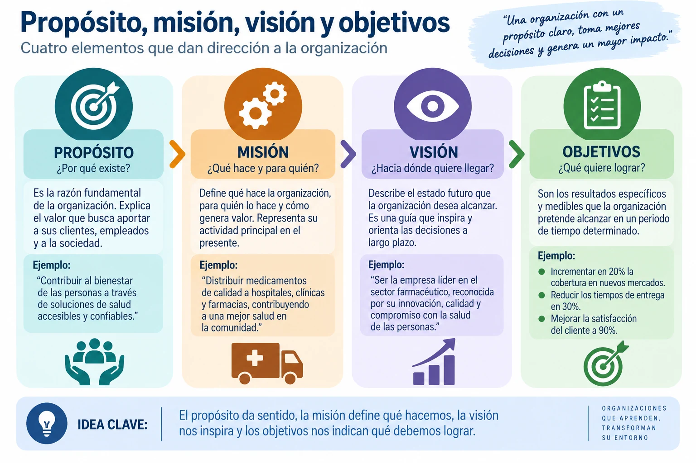
1.3 Planeación y programación del estudio
1.3 Planeación y programación del estudio
Una vez identificada la problemática y comprendido el propósito de la organización, el siguiente paso consiste en planear cómo se realizará el estudio organizacional.
No es conveniente comenzar a solicitar documentos, entrevistar empleados o analizar procesos sin establecer previamente qué se investigará, quién participará, qué recursos serán necesarios y cuánto tiempo se utilizará.
¿Qué es la planeación del estudio?
La planeación del estudio organizacional consiste en definir anticipadamente las acciones necesarias para investigar y analizar una problemática.
Permite establecer una ruta de trabajo ordenada y evitar que el estudio se realice de manera improvisada.
En esta etapa se determina:
- Qué se pretende estudiar.
- Por qué es necesario realizar el estudio.
- Qué áreas o procesos serán analizados.
- Qué información será necesaria.
- Quiénes participarán.
- Qué técnicas se utilizarán.
- Qué recursos se necesitarán.
- Cuánto tiempo se requerirá.
Una planeación adecuada responde:
¿Qué vamos a estudiar? → ¿Para qué? → ¿Cómo? → ¿Quién? → ¿Con qué? → ¿Cuándo?
Objetivo y alcance del estudio
Uno de los primeros elementos que deben establecerse es el objetivo.
El objetivo indica qué se pretende conseguir mediante el estudio organizacional.
Por ejemplo:
Objetivo: Analizar el proceso de atención de pedidos para identificar las causas de los retrasos y proponer alternativas que permitan reducir los tiempos de entrega.
También debemos establecer el alcance, es decir, determinar hasta dónde llegará el estudio.
Puede abarcar:
Un puesto: analizar las actividades de un auxiliar administrativo.
Un proceso: analizar el proceso de compras.
Un departamento: estudiar el funcionamiento de Recursos Humanos.
Varias áreas: analizar la coordinación entre Ventas, Almacén y Distribución.
Toda la organización: realizar un diagnóstico organizacional integral.
Definir el alcance evita investigar información que no está directamente relacionada con la problemática.
¿Qué recursos se necesitan?
Todo estudio organizacional requiere recursos para poder desarrollarse.
Recursos humanos
Personas responsables de realizar el estudio y trabajadores que proporcionarán información.
Recursos materiales
Computadoras, formatos, documentos, instalaciones y demás elementos necesarios.
Recursos tecnológicos
Software, sistemas de información, bases de datos o herramientas digitales.
Recursos financieros
Presupuesto requerido para desarrollar las actividades del estudio.
Tiempo
Periodo disponible para recopilar información, analizarla y presentar resultados.
__________________________________________________________________________________________________________________________________
Programación del estudio
Mientras que la planeación establece qué se hará y cómo se hará, la programación determina cuándo se realizará cada actividad.
Para ello se organizan las actividades en una secuencia y se asignan fechas o periodos de ejecución.

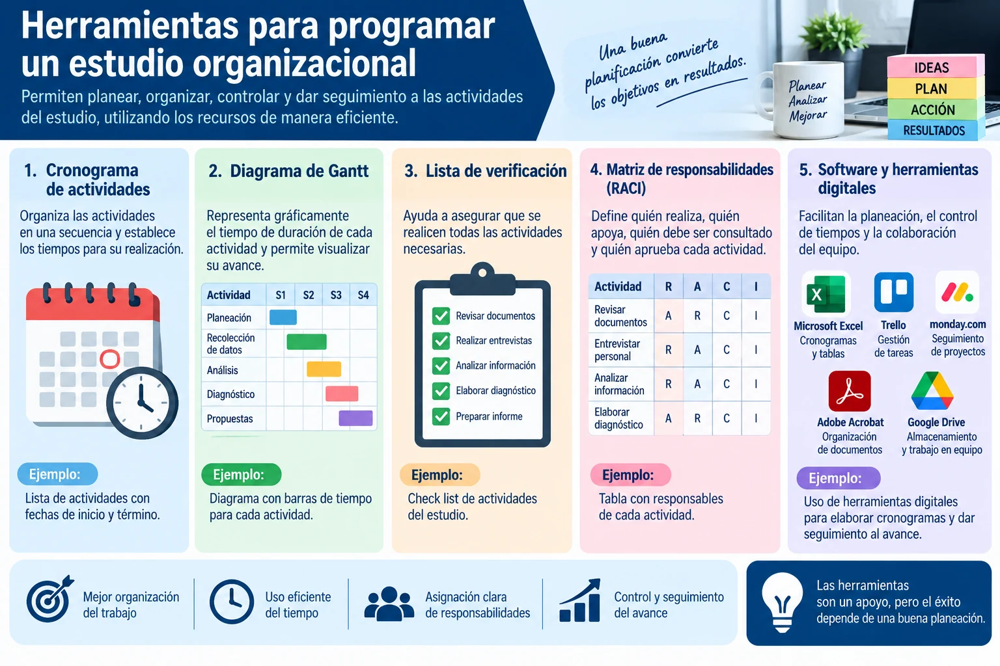
Ejemplo aplicado
Una empresa detecta retrasos frecuentes en el proceso de compras.
Antes de buscar una solución decide realizar un estudio organizacional.
Problema identificado: retrasos en la adquisición de materiales.
Objetivo: identificar las actividades que generan demoras en el proceso de compras.
Alcance: desde que un departamento solicita un material hasta que se emite la orden de compra.
Participantes: personal de Compras, Administración y áreas solicitantes.
Técnicas: revisión documental, entrevistas y observación.
Duración: dos semanas.
De esta manera, antes de recopilar información, la organización ya sabe qué investigará, para qué lo hará, quién participará y cuánto tiempo tendrá para hacerlo.
Idea clave
Planear es decidir cómo realizaremos el estudio; programar es establecer cuándo realizaremos cada actividad.
Una buena planeación permite obtener información relevante, utilizar adecuadamente los recursos y mantener el estudio enfocado en la problemática que se pretende resolver.
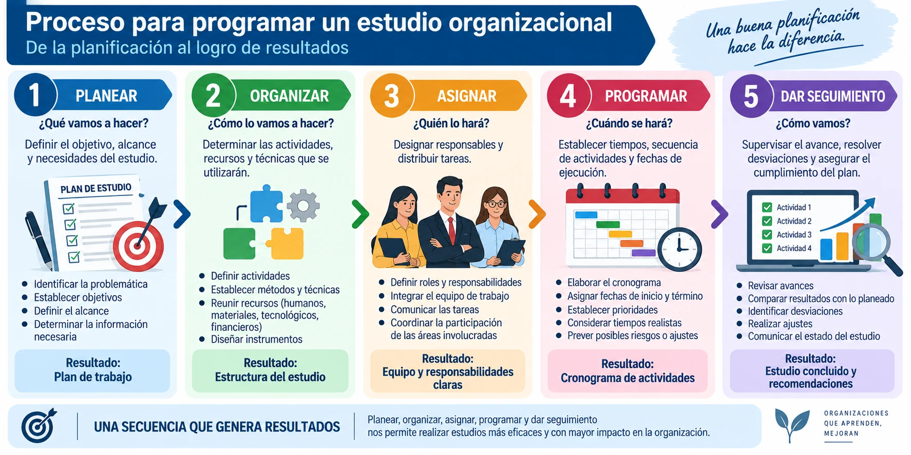
1.4 Levantamiento de la información
1.4 Levantamiento de la información
Después de planear y programar el estudio organizacional, llega el momento de recopilar información directamente de la organización.
Esta etapa es fundamental porque las decisiones y propuestas posteriores dependerán de la calidad, confiabilidad y pertinencia de los datos obtenidos.
¿Qué es el levantamiento de información?
El levantamiento de información es el proceso sistemático de recopilar datos sobre la estructura, procesos, actividades, puestos, procedimientos y problemáticas de una organización.
Su finalidad es conocer cómo funciona realmente la organización, y no solamente cómo debería funcionar de acuerdo con sus documentos o procedimientos establecidos.
Por ejemplo, un manual puede indicar que una autorización debe realizarse en un día; sin embargo, al observar el proceso puede descubrirse que normalmente tarda cuatro días.
Esta diferencia entre lo establecido y lo que realmente ocurre es precisamente una de las razones por las que resulta importante recopilar información.
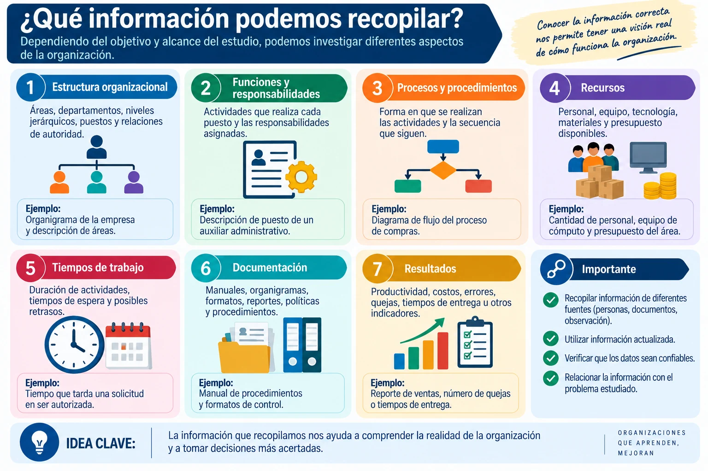
Técnicas para recopilar información
Para obtener información confiable pueden utilizarse diferentes técnicas.
1. Observación directa
Consiste en observar cómo se realizan realmente las actividades dentro de la organización.
Permite detectar:
- Actividades innecesarias.
- Tiempos de espera.
- Duplicidad de funciones.
- Recorridos innecesarios.
- Interrupciones.
- Problemas de coordinación.
Ejemplo: observar desde que se recibe un pedido hasta que llega al almacén.
2. Entrevista
Consiste en conversar directamente con las personas involucradas mediante preguntas previamente preparadas.
Permite conocer experiencias, dificultades, responsabilidades y opiniones del personal.
Ejemplo: entrevistar al responsable de Compras para conocer por qué determinadas autorizaciones tardan varios días.
3. Cuestionario
Es un conjunto estructurado de preguntas que se aplica a varias personas para recopilar información de manera uniforme.
Es especialmente útil cuando se necesita obtener información de un número considerable de trabajadores.
Ejemplo: aplicar un cuestionario al personal para conocer qué tan clara considera la distribución de funciones.
4. Revisión documental
Consiste en analizar documentos existentes relacionados con el funcionamiento de la organización.
Pueden revisarse:
- Organigramas.
- Manuales.
- Procedimientos.
- Reportes.
- Formatos.
- Políticas.
- Descripciones de puestos.
- Registros y estadísticas.
La documentación permite comparar lo establecido formalmente con lo que sucede en la práctica.
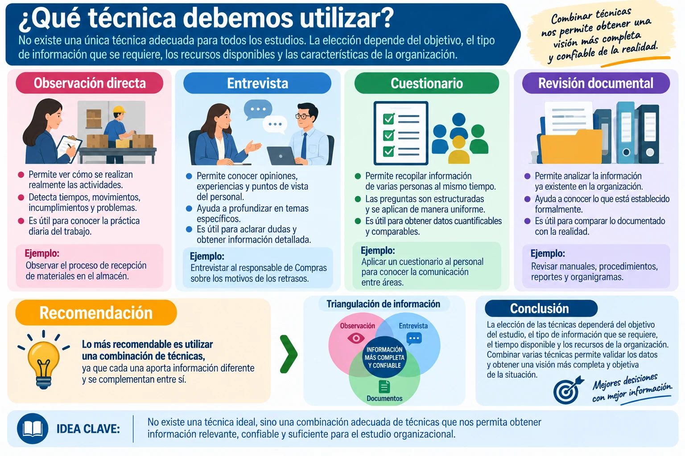
Características de una buena información
La información recopilada debe ser:
Relevante: relacionada directamente con el problema estudiado.
Confiable: provenir de fuentes que permitan respaldarla.
Objetiva: basada en hechos y evidencias, evitando opiniones sin fundamento.
Suficiente: permitir comprender adecuadamente la situación.
Actualizada: representar las condiciones actuales de la organización.
Verificable: poder compararse o confirmarse mediante otras fuentes.
Ejemplo aplicado
Continuemos con la empresa que presenta retrasos en su proceso de compras.
Para investigar la problemática se decide:
Observar cómo se tramita una solicitud de compra.
Entrevistar al personal de Compras y a las áreas solicitantes.
Revisar formatos, procedimientos y registros de compras.
Medir cuánto tiempo permanece una solicitud en cada etapa.
Después de recopilar la información se descubre que la mayoría de los retrasos ocurre porque algunas solicitudes permanecen varios días esperando autorización.
Ahora la organización cuenta con evidencia, no solamente con suposiciones.
Idea clave
Un buen diagnóstico comienza con buena información.
Si los datos recopilados son incompletos, incorrectos o se basan únicamente en opiniones, las conclusiones del estudio también pueden ser incorrectas.
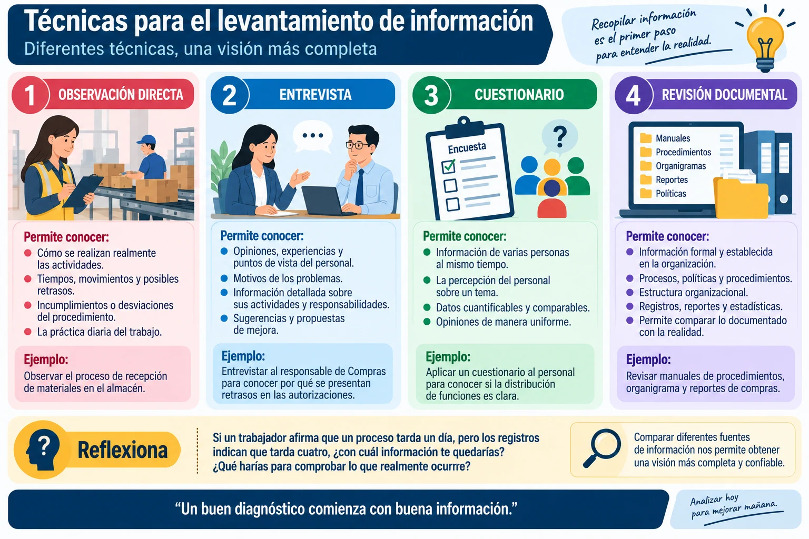
Si un trabajador afirma que un proceso tarda un día, pero los registros indican que tarda cuatro, ¿con cuál información te quedarías? ¿Qué harías para comprobar lo que realmente ocurre?
1.5 Análisis y diagnóstico administrativo
1.5 Análisis y diagnóstico administrativo
Después de recopilar información mediante observaciones, entrevistas, cuestionarios y documentos, el siguiente paso consiste en ordenar, comparar e interpretar los datos obtenidos.
Recopilar información por sí sola no resuelve una problemática. Es necesario analizarla para identificar causas, efectos, relaciones, deficiencias y oportunidades de mejora.
¿Qué es el análisis administrativo?
El análisis administrativo es el proceso mediante el cual se examina la información obtenida durante el estudio organizacional para comprender cómo funciona actualmente la organización.
Su propósito es detectar situaciones como:
- Duplicidad de funciones.
- Actividades innecesarias.
- Retrasos en los procesos.
- Falta de coordinación entre áreas.
- Responsabilidades poco claras.
- Uso inadecuado de recursos.
- Exceso de autorizaciones.
- Problemas de comunicación.
- Incumplimiento de procedimientos.
- Diferencias entre lo establecido y lo que realmente se realiza.
- El análisis busca responder principalmente:
¿Qué está sucediendo? → ¿Por qué sucede? → ¿Qué consecuencias genera?
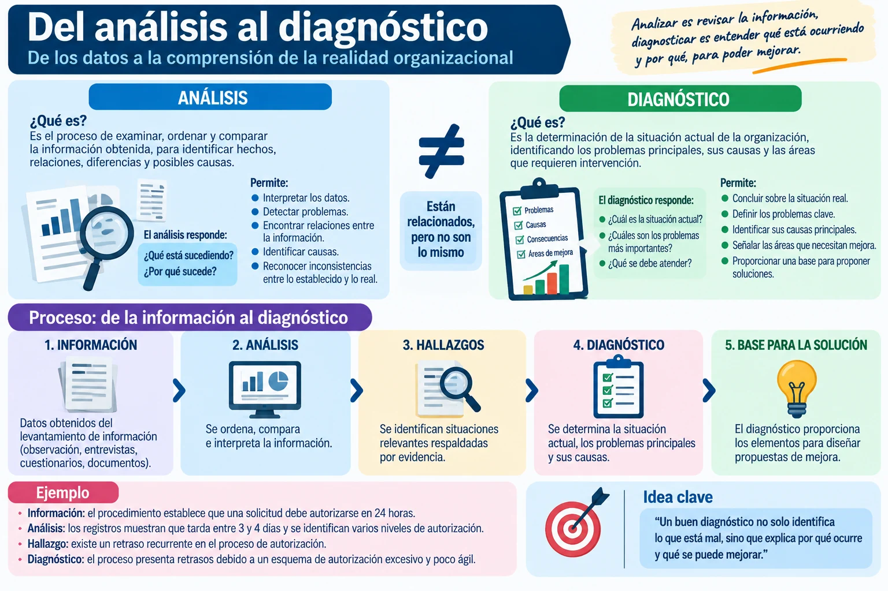
¿Qué es un hallazgo?
Un hallazgo es una situación relevante identificada durante el análisis y respaldada por evidencia.
Por ejemplo:
Información obtenida:
El procedimiento establece que una solicitud debe autorizarse en 24 horas.
Evidencia:
Los registros muestran que normalmente tarda entre tres y cuatro días.
Hallazgo:
Existe un retraso recurrente en el proceso de autorización.
El hallazgo permite pasar de una percepción o comentario a una situación comprobable mediante evidencia.
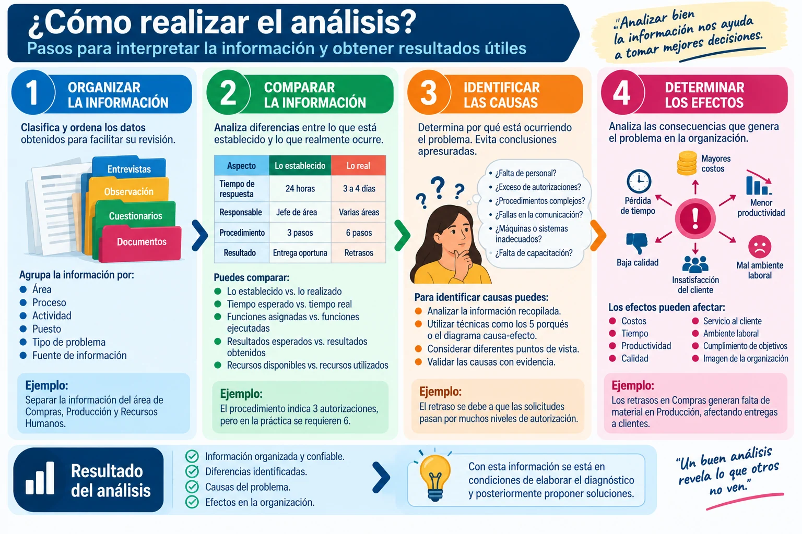
Herramientas para apoyar el diagnóstico
Dependiendo de la problemática pueden utilizarse herramientas sencillas de análisis.
Diagrama causa-efecto
Ayuda a identificar y organizar las posibles causas de un problema.
Técnica de los 5 porqués
Consiste en preguntar repetidamente “¿por qué?” para profundizar hasta encontrar una posible causa raíz.
Diagrama de flujo
Permite representar las etapas de un proceso y detectar actividades innecesarias, retrasos o duplicidades.
Matriz FODA
Permite analizar fortalezas y debilidades internas, así como oportunidades y amenazas del entorno, cuando el alcance del estudio lo requiera.
Indicadores
Permiten analizar datos como tiempos, costos, productividad, errores, rotación, quejas o cumplimiento de objetivos.
Ejemplo:
Continuemos con el caso del proceso de compras.
Durante el levantamiento de información se encontró:
Procedimiento establecido: una solicitud debe autorizarse en 24 horas.
Registros: el tiempo promedio de autorización es de cuatro días.
Entrevistas: los trabajadores señalan que una solicitud necesita varias firmas.
Observación: algunos documentos permanecen esperando autorización porque los responsables no siempre están disponibles.
Análisis
Al comparar la información se identifica que existen demasiados niveles de autorización para determinadas compras.
Diagnóstico
El proceso presenta retrasos debido principalmente a un esquema de autorización excesivo y poco ágil, que provoca tiempos de espera y afecta la adquisición oportuna de materiales.
Ahora la organización tiene una explicación respaldada por evidencia y puede comenzar a estudiar alternativas de solución.
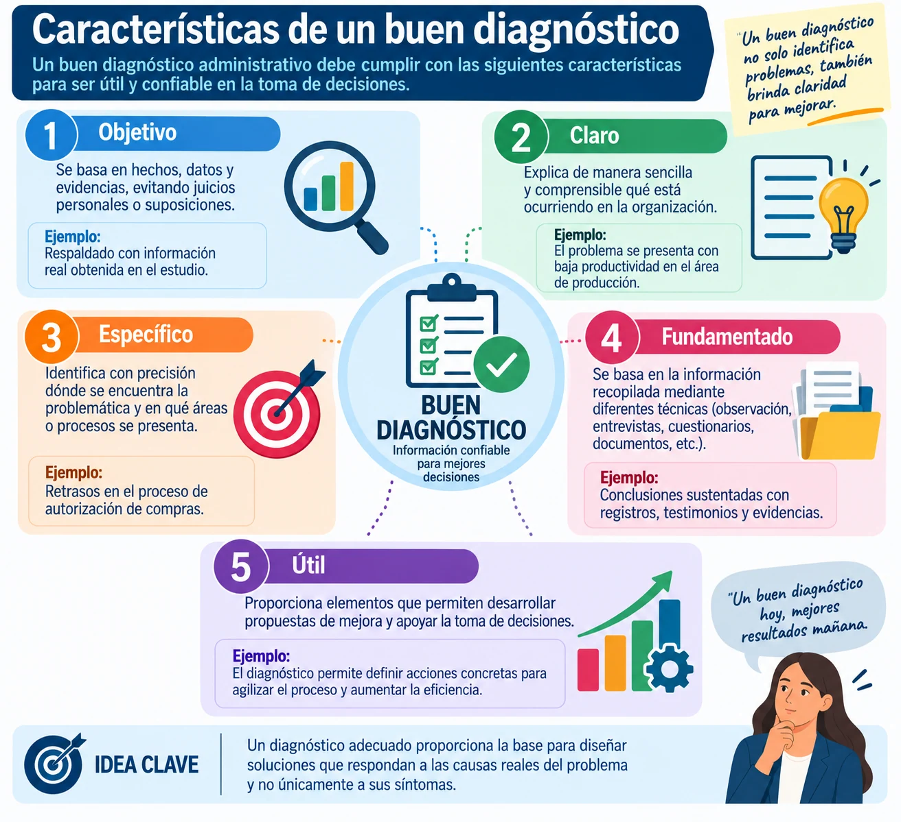
Idea clave
Diagnosticar no es solamente decir qué está mal; es comprender qué está ocurriendo, por qué ocurre y qué consecuencias está generando.
Un diagnóstico adecuado proporciona la base para diseñar soluciones que respondan a las causas reales del problema y no únicamente a sus síntomas.
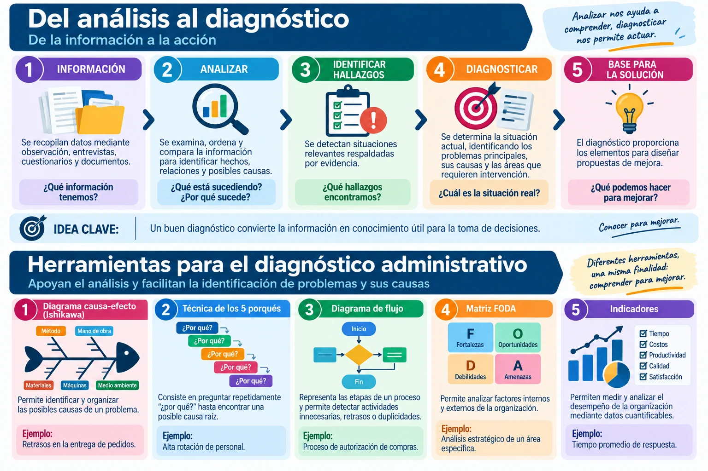
1.6 Diseño conceptual
1.6 Diseño conceptual
Este tema representa un cambio importante: ya conocemos el problema y sus causas; ahora comenzamos a diseñar cómo debería funcionar la organización para mejorar la situación.
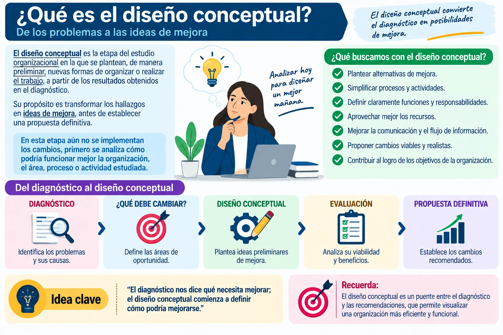
¿Qué podemos diseñar o modificar?
Dependiendo de los problemas detectados, el diseño conceptual puede considerar cambios en diferentes elementos de la organización.
Procesos y procedimientos
Simplificar actividades, eliminar pasos innecesarios o modificar la secuencia del trabajo.
Funciones y responsabilidades
Definir con mayor claridad quién debe realizar cada actividad y evitar duplicidades.
Estructura organizacional
Modificar relaciones de autoridad, niveles jerárquicos o distribución de responsabilidades.
Métodos de trabajo
Proponer formas más eficientes para realizar determinadas actividades.
Flujo de información
Mejorar la manera en que la información pasa de una persona o departamento a otro.
Formatos y documentos
Simplificar, eliminar o rediseñar documentos utilizados en los procesos.
Uso de tecnología
Incorporar herramientas digitales que permitan automatizar actividades o reducir tiempos.
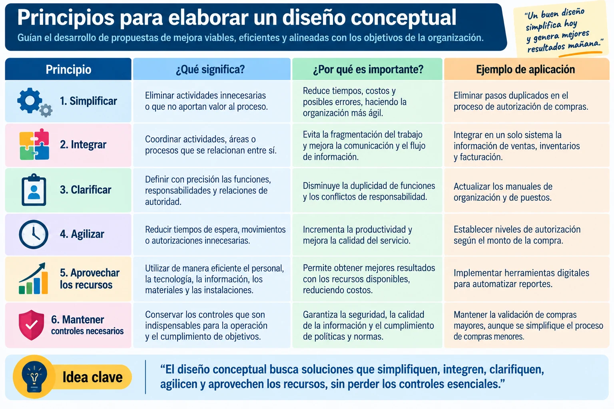
Situación actual vs. diseño propuesto
Una forma sencilla de desarrollar el diseño conceptual es comparar cómo funciona actualmente el proceso con cómo podría funcionar después de la mejora.
Situación actual
Solicitud → Jefe de área → Administración → Gerencia → Dirección → Compras
El diagnóstico demuestra que existen demasiados niveles de autorización y las solicitudes tardan varios días.
Diseño conceptual
Para compras de bajo monto podría plantearse:
Solicitud → Jefe de área → Compras
Mientras que las compras de mayor monto conservarían controles adicionales.
El objetivo no sería simplemente eliminar autorizaciones, sino establecer un proceso proporcional al nivel de responsabilidad y riesgo.
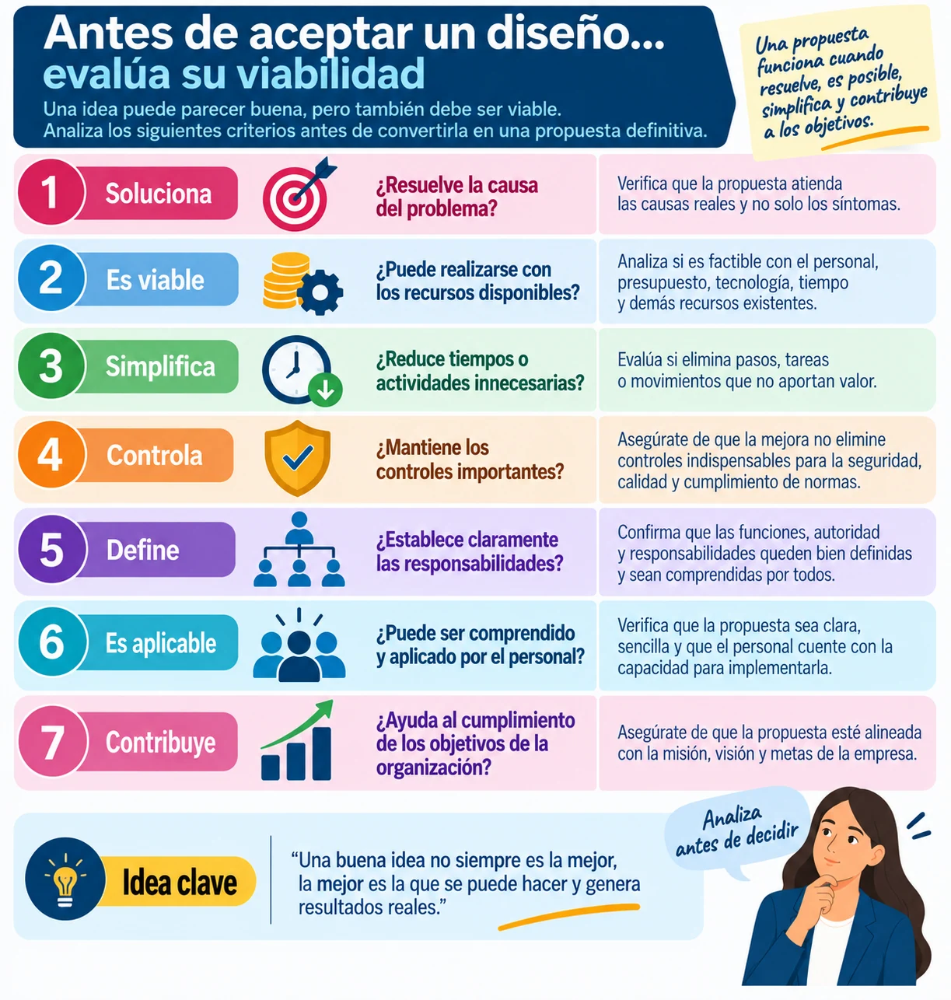
Continuemos con nuestro caso del área de Compras.
Diagnóstico
Las solicitudes tardan entre tres y cuatro días porque requieren demasiadas autorizaciones, incluso cuando se trata de compras de bajo monto.
Diseño conceptual
Se plantea establecer diferentes niveles de autorización según el monto de la compra.
Compras menores: autorización del jefe de área.
Compras intermedias: jefe de área + Administración.
Compras mayores: jefe de área + Administración + Dirección.
Resultado esperado
- Reducir tiempos de autorización.
- Mantener controles en operaciones de mayor importancia.
- Evitar trámites innecesarios.
- Agilizar la adquisición de materiales.
Así, el diseño conceptual comienza a transformar el diagnóstico en una posible solución.
Diseño conceptual y solución definitiva
Es importante distinguirlos:
Diseño conceptual: plantea cómo podría mejorarse la situación.
Propuesta de solución: establece de manera más concreta qué cambios se recomiendan realizar y cómo se llevarán a cabo.
Por eso el diseño conceptual funciona como un puente entre el diagnóstico y las recomendaciones.
Idea clave
El diagnóstico nos dice qué necesita mejorar; el diseño conceptual comienza a definir cómo podría mejorarse.
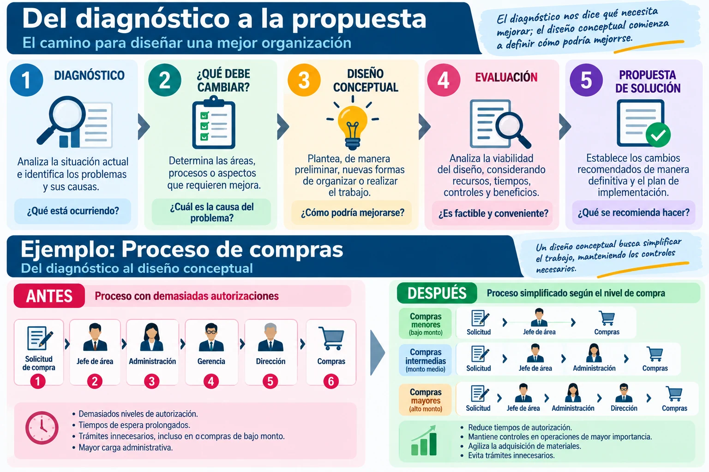
1.7 Recomendaciones y propuestas de solución
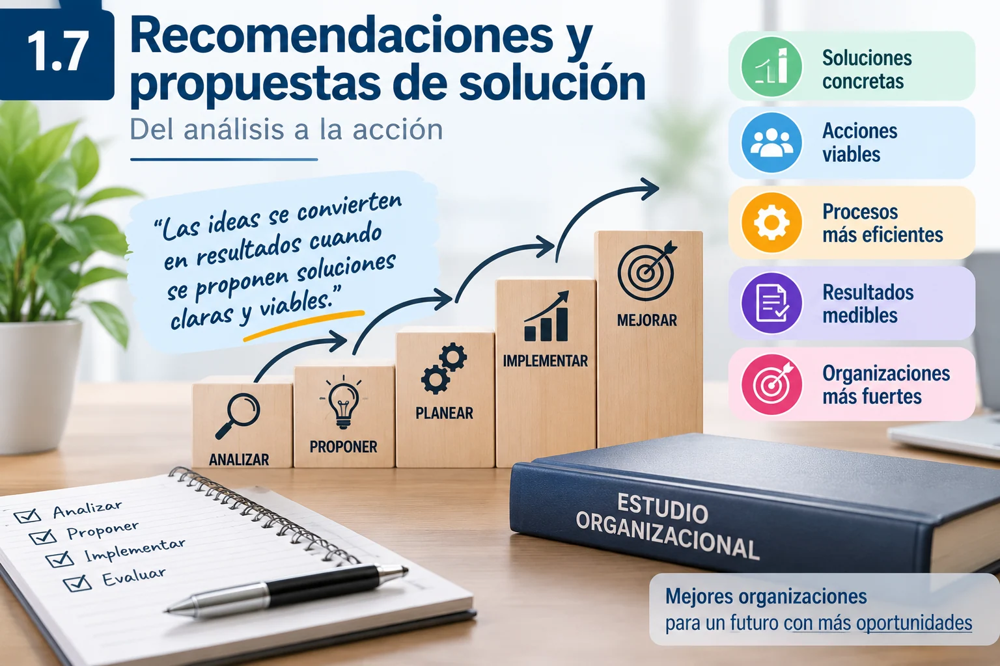
Después de analizar la problemática, realizar el diagnóstico y desarrollar un diseño conceptual, el estudio organizacional debe establecer qué acciones se recomienda realizar para mejorar la situación detectada.
¿Qué son las recomendaciones?
Las recomendaciones son acciones sugeridas a partir de los resultados del diagnóstico.
Deben estar sustentadas en la información recopilada y responder directamente a las causas de los problemas identificados.
Una recomendación no debe basarse únicamente en una opinión como:
❌ “Hay que mejorar el proceso.”
Debe indicar con mayor precisión qué se recomienda modificar y qué resultado se pretende obtener.
Por ejemplo:
✅ “Establecer diferentes niveles de autorización de compras según el monto de la operación, con el propósito de reducir los tiempos de respuesta sin eliminar los controles necesarios.”
De la problemática a la solución
Una propuesta de solución debe mantener una relación lógica con todo el estudio realizado:
PROBLEMA → CAUSA → DIAGNÓSTICO → RECOMENDACIÓN → RESULTADO ESPERADO
Ejemplo
Problema:
Retrasos en el proceso de compras.
Causa identificada:
Exceso de niveles de autorización.
Diagnóstico:
Todas las compras siguen prácticamente el mismo procedimiento, independientemente de su monto.
Recomendación:
Establecer niveles de autorización diferentes para compras menores, intermedias y mayores.
Resultado esperado:
Reducir los tiempos de autorización manteniendo los controles necesarios.
Esta secuencia es importante porque demuestra que la propuesta no surge de una ocurrencia, sino de la evidencia obtenida durante el estudio.
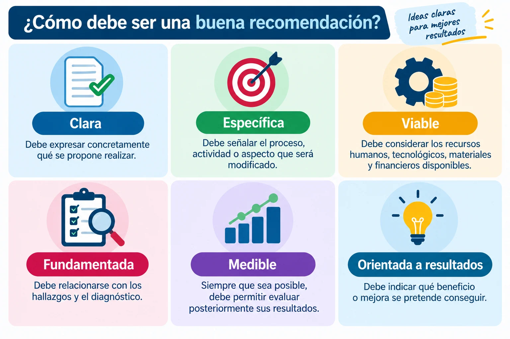
¿Qué puede incluir una propuesta de solución?
Dependiendo del problema estudiado, pueden proponerse acciones como:
Simplificar procesos
Eliminar actividades, trámites o autorizaciones innecesarias.
Redistribuir funciones
Asignar responsabilidades de manera más clara.
Modificar procedimientos
Cambiar la secuencia o forma de realizar determinadas actividades.
Actualizar documentos
Modificar manuales, políticas, formatos o descripciones de puestos.
Incorporar tecnología
Digitalizar o automatizar actividades.
Capacitar al personal
Desarrollar conocimientos o habilidades necesarias para mejorar el desempeño.
Mejorar la coordinación
Establecer mecanismos de comunicación entre áreas.
Establecer indicadores
Medir tiempos, costos, productividad, calidad u otros resultados.
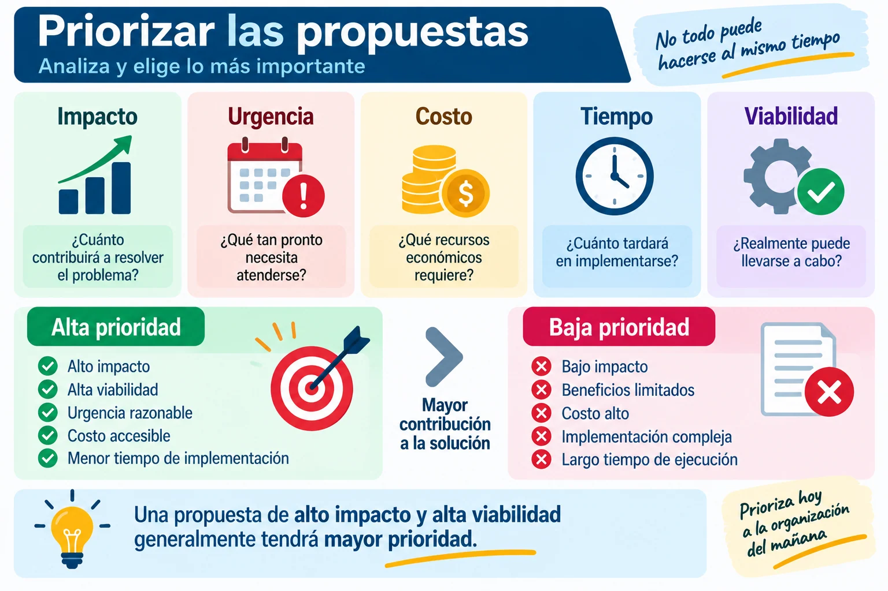
Ejemplo:
Continuemos con el proceso de compras utilizado durante los temas anteriores.
Situación detectada
Las solicitudes de compra tardan entre tres y cuatro días en ser autorizadas.
Causa
Todas las compras requieren varios niveles de autorización.
Propuesta de solución
Establecer tres niveles:
Compras menores: Jefe de área → Compras.
Compras intermedias: Jefe de área → Administración → Compras.
Compras mayores: Jefe de área → Administración → Dirección → Compras.
Acciones complementarias
- Actualizar el procedimiento de compras.
- Establecer los montos correspondientes a cada nivel.
- Comunicar el nuevo procedimiento al personal.
- Actualizar los formatos necesarios.
- Medir el tiempo promedio de autorización después del cambio.
Resultado esperado
Menor tiempo de autorización + reducción de trámites innecesarios + conservación de controles importantes.
¿Cómo sabemos si la propuesta funcionó?
Una propuesta debe incluir resultados que posteriormente puedan evaluarse.
Por ejemplo:
Antes: tiempo promedio de autorización = 4 días.
Meta después de la mejora: tiempo promedio ≤ 24 horas para compras menores.
De esta manera podemos comparar:
SITUACIÓN INICIAL → IMPLEMENTACIÓN → RESULTADO → EVALUACIÓN
Esto permite determinar si la propuesta realmente produjo la mejora esperada.
Idea clave
Una buena propuesta no solamente indica qué cambiar; explica por qué debe cambiar, cómo puede mejorarse y qué resultado se espera obtener.
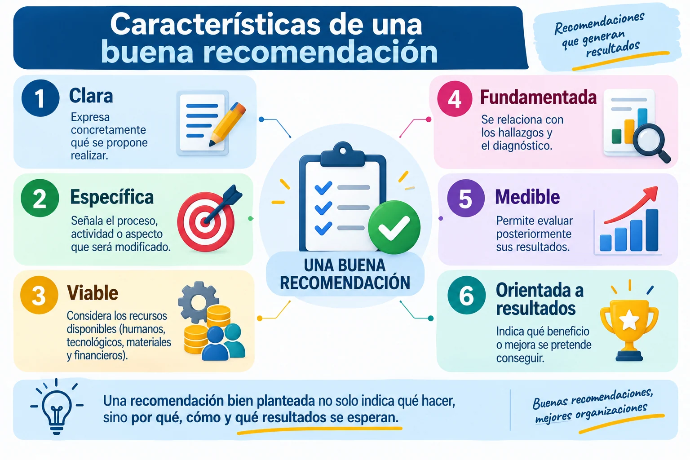
1.8 Implantación
1.8 Implantación
Hasta este momento, el estudio organizacional ha permitido identificar una problemática, recopilar información, realizar un diagnóstico y diseñar propuestas de solución.
Ahora corresponde llevar esas propuestas a la práctica.
¿Qué es la implantación?
La implantación es el proceso mediante el cual las recomendaciones y propuestas aprobadas se ponen en funcionamiento dentro de la organización.
Implica pasar:
DE LO PROPUESTO → A LO REAL
No basta con diseñar una buena solución. Para que produzca resultados es necesario establecer cómo se realizará el cambio, quién será responsable, cuándo comenzará y qué recursos serán necesarios.
Por ejemplo, si se propone reducir los niveles de autorización del proceso de compras, la implantación no consiste solamente en comunicar que habrá un cambio.
Será necesario:
- Aprobar el nuevo procedimiento.
- Definir responsabilidades.
- Actualizar documentos y formatos.
- Informar al personal involucrado.
- Capacitar cuando sea necesario.
- Establecer una fecha de inicio.
- Supervisar su aplicación.
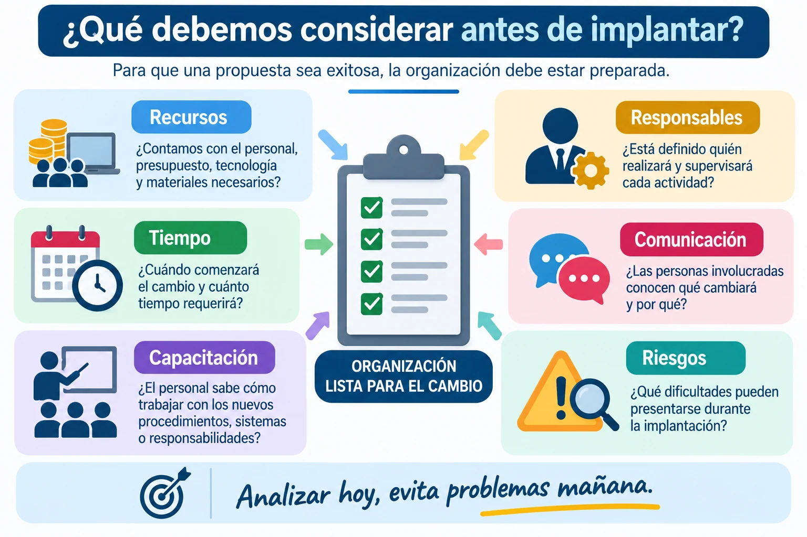
Etapas de la implantación
Podemos comprender la implantación mediante cinco pasos:
1. Preparar
Definir las actividades, recursos, responsables y tiempos necesarios.
2. Comunicar
Explicar al personal qué cambiará, por qué se realizará el cambio y cómo le afectará.
3. Capacitar
Proporcionar los conocimientos y habilidades necesarios para aplicar correctamente la propuesta.
4. Ejecutar
Poner en funcionamiento los nuevos procesos, procedimientos, estructuras o herramientas.
5. Supervisar
Observar el desarrollo de la implantación para identificar dificultades y realizar los ajustes necesarios.
PREPARAR → COMUNICAR → CAPACITAR → EJECUTAR → SUPERVISAR
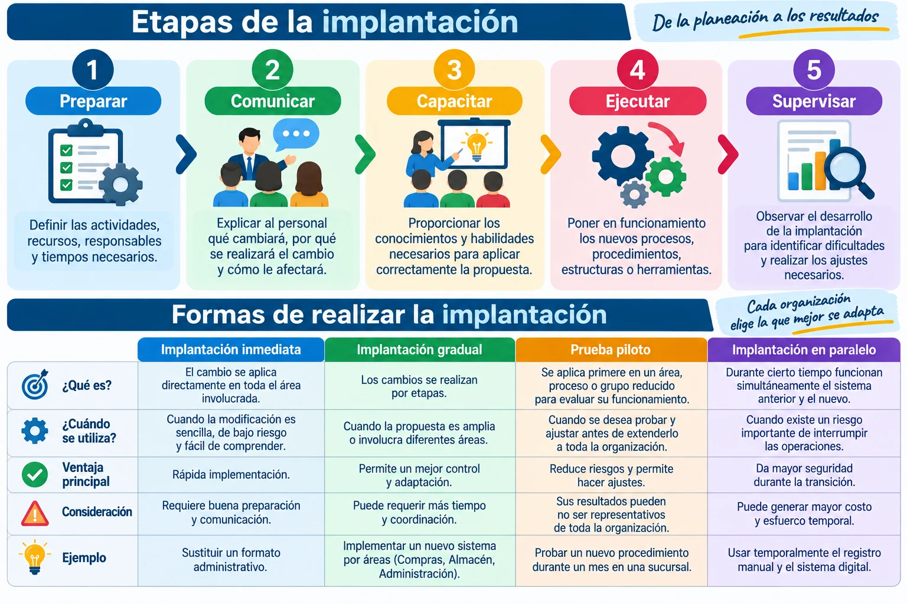
Resistencia al cambio
No todas las personas reaccionan de la misma manera ante una modificación organizacional.
La resistencia al cambio puede surgir por:
- Temor a perder responsabilidades o autoridad.
- Desconocimiento.
- Falta de capacitación.
- Incertidumbre.
- Costumbre de trabajar de determinada manera.
- Experiencias negativas con cambios anteriores.
- Falta de participación del personal.
La resistencia no debe tratarse únicamente como oposición. También puede proporcionar información sobre dificultades que no fueron consideradas durante el diseño de la propuesta.
Por ello resulta importante escuchar, informar, capacitar e involucrar al personal.
Ejemplo:
Continuemos con nuestro caso del proceso de compras.
Propuesta aprobada
Establecer diferentes niveles de autorización según el monto de las compras.
Implantación
1. Se aprueba formalmente el nuevo procedimiento.
2. Se establecen los montos y responsables de autorización.
3. Se actualizan procedimientos y formatos.
4. Se comunica el cambio a Compras, Administración y demás áreas involucradas.
5. Se capacita al personal.
6. Se establece una fecha de inicio.
7. Se supervisan las primeras operaciones.
Resultado esperado
Menos trámites → menor tiempo de autorización → mayor eficiencia → mantenimiento de los controles necesarios.
Idea clave
Una propuesta genera valor solamente cuando puede convertirse en una mejora real dentro de la organización.
1.9 Evaluación y mantenimiento organizacional
1.9 Evaluación y mantenimiento organizacional
Este tema permite cerrar el ciclo del estudio organizacional. Después de implantar una propuesta, es necesario comprobar si realmente funcionó y asegurarse de que las mejoras se mantengan en el tiempo.
¿Qué es la evaluación organizacional?
La evaluación organizacional consiste en analizar los resultados obtenidos después de implantar una propuesta de mejora para determinar si se alcanzaron los objetivos esperados.
En otras palabras, busca responder:
¿La solución funcionó?
Para saberlo, debemos comparar la situación antes y después de la implantación.
ANTES → IMPLANTACIÓN → MEDICIÓN → COMPARACIÓN → RESULTADOS
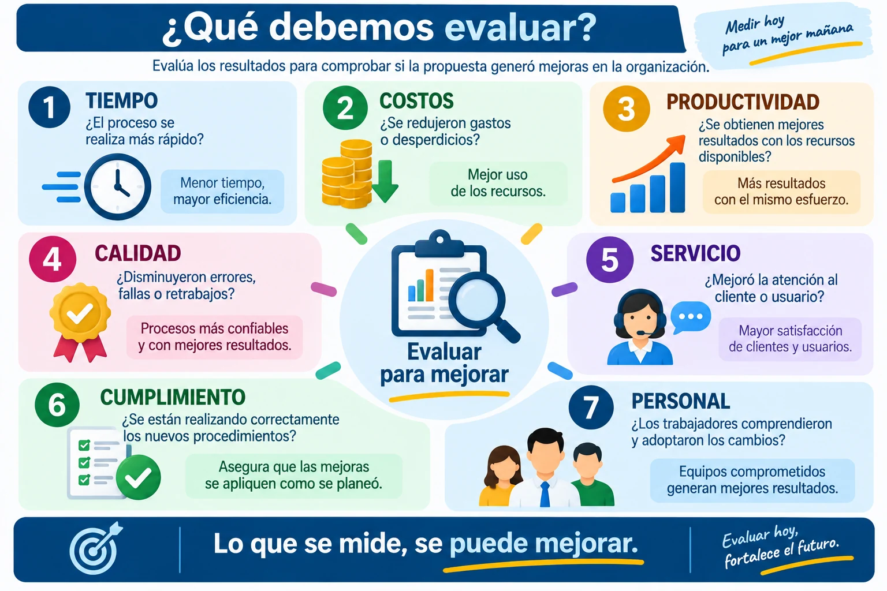
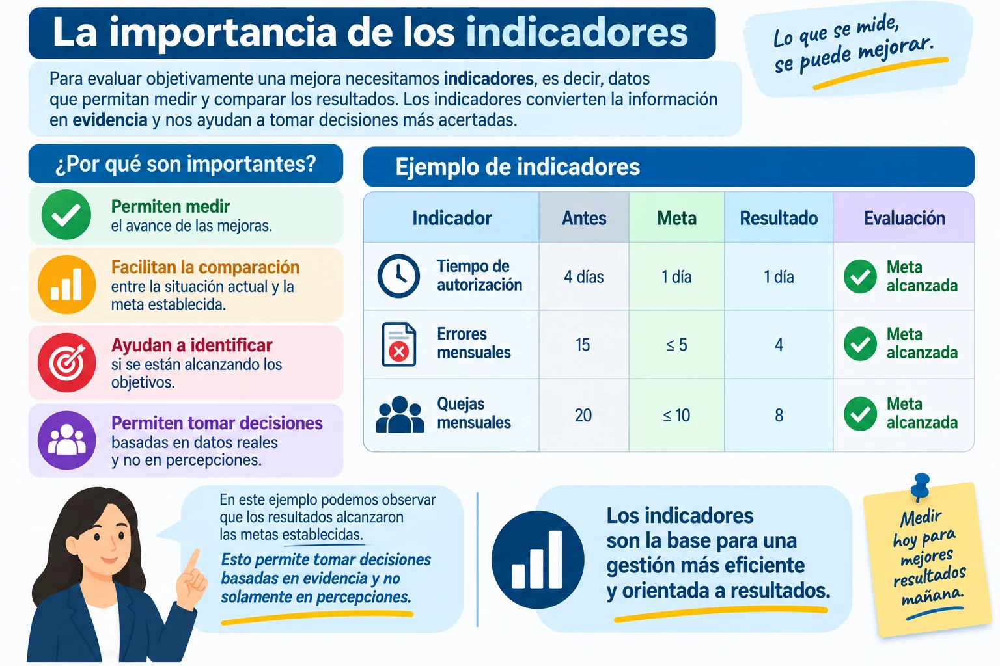
¿Qué ocurre si los resultados no son los esperados?
Una evaluación no tiene como finalidad demostrar que todo salió bien.
También permite identificar:
- Problemas durante la implantación.
- Resultados inferiores a lo esperado.
- Nuevas dificultades.
- Errores no previstos.
- Necesidad de capacitación adicional.
- Cambios que requieren ajustes.
Cuando una propuesta no obtiene los resultados esperados debemos analizar:
¿QUÉ FALLÓ? → ¿POR QUÉ? → ¿QUÉ DEBEMOS AJUSTAR?
Posteriormente se realizan las acciones correctivas necesarias.
¿Qué es el mantenimiento organizacional?
El mantenimiento organizacional consiste en realizar acciones de seguimiento y actualización para evitar que las mejoras alcanzadas se pierdan con el tiempo.
Una organización cambia constantemente: cambia el personal, la tecnología, los clientes, los procesos y las condiciones del entorno.
Por ello, una solución que funciona hoy puede necesitar modificaciones en el futuro.
¿Cómo mantener las mejoras?
Dar seguimiento
Revisar periódicamente los resultados obtenidos.
Actualizar procedimientos
Modificar documentos cuando cambien los procesos o responsabilidades.
Capacitar al personal
Preparar tanto al personal actual como a las nuevas incorporaciones.
Revisar indicadores
Comprobar que los resultados continúen dentro de los niveles esperados.
Detectar nuevas necesidades
Identificar oportunamente problemas o cambios en la organización.
Aplicar acciones correctivas
Realizar ajustes cuando se detecten desviaciones.
Evaluación y mantenimiento:
¿Cuál es la diferencia?
EVALUACIÓN
Determina si la mejora produjo los resultados esperados.
MANTENIMIENTO
Busca que los resultados positivos continúen en el tiempo.
Podemos resumirlo así:
EVALUAR = comprobar
MANTENER = conservar y mejorar
Ejemplo:
Cerremos el caso del proceso de compras que hemos utilizado durante la Unidad 1.
Situación inicial
Las autorizaciones tardaban aproximadamente 4 días.
Propuesta implantada
Se establecieron diferentes niveles de autorización según el monto de la compra.
Evaluación
Después de un mes se mide nuevamente el proceso.
Resultado: las compras menores ahora se autorizan, en promedio, en 1 día.
La propuesta produjo una mejora.
Mantenimiento
Para conservar el resultado, la organización decide:
- Revisar mensualmente los tiempos de autorización.
- Mantener actualizado el procedimiento.
- Capacitar al personal nuevo.
- Revisar periódicamente los niveles de autorización.
- Realizar ajustes cuando se detecten retrasos.
Así, la organización no solamente soluciona un problema, sino que procura evitar que vuelva a presentarse
Mejora continua
La evaluación y el mantenimiento convierten el estudio organizacional en un proceso de mejora continua:
EVALUAR → DETECTAR → AJUSTAR → MEJORAR → VOLVER A EVALUAR
La organización no debe esperar a que aparezca nuevamente un problema grave para revisar sus procesos.
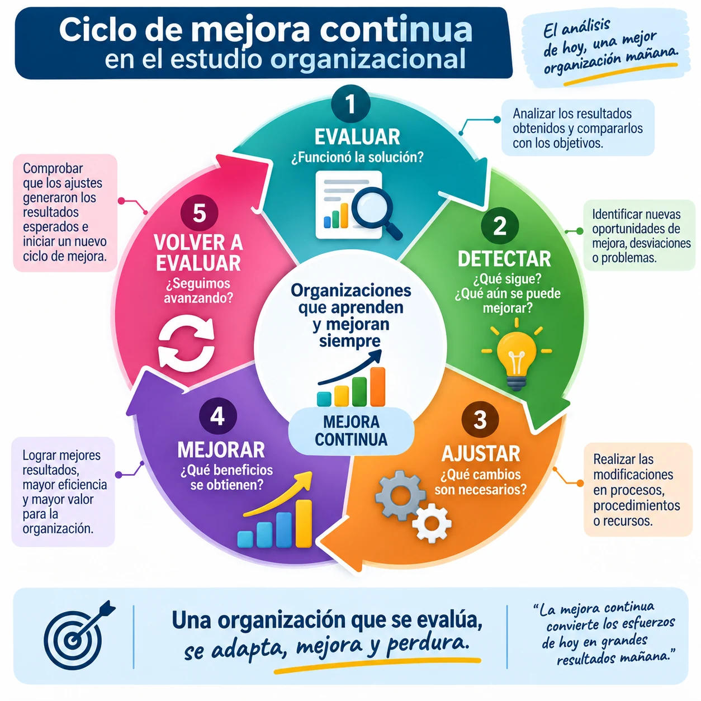
Idea clave
Implantar una mejora no significa terminar el estudio. Es necesario evaluar sus resultados, mantener lo que funciona y corregir aquello que todavía puede mejorarse.